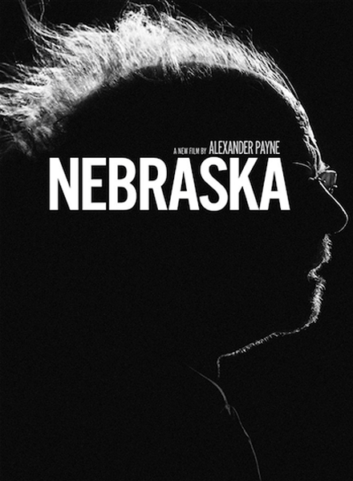

Nebraska
Cantankerous old buzzard Woody Grant (Bruce Dern) can barely walk down the street of his home in Billings, Mont., without stopping for a drink. So when Woody receives receives a sweepstakes notice in the mail and insists on making a 750-mile trip to Lincoln, Neb., to collect his prize, it falls to baffled son David (Will Forte) to accompany him. During a stop in their Nebraska hometown, word gets out about Woody's fortune, first making him a hero, then later, the target of predatory people.
Released:
23rd May 2013Director:
Alexander PayneActors:
- Bruce Dern (Woody Grant)
- Will Forte (David Grant)
- June Squibb (Kate Grant)